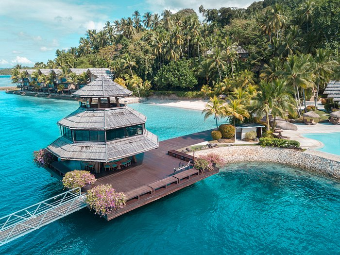
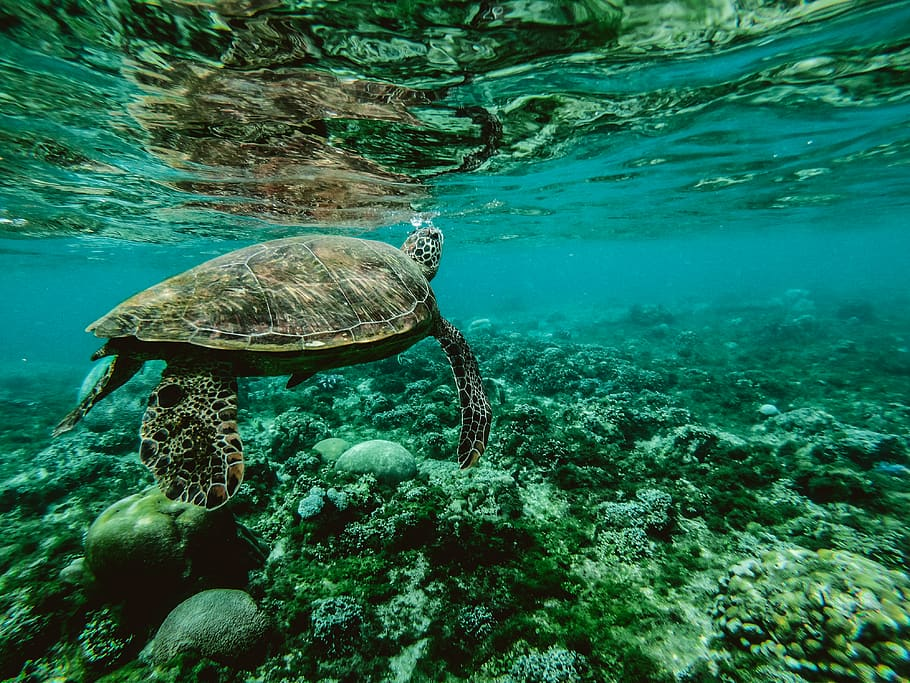
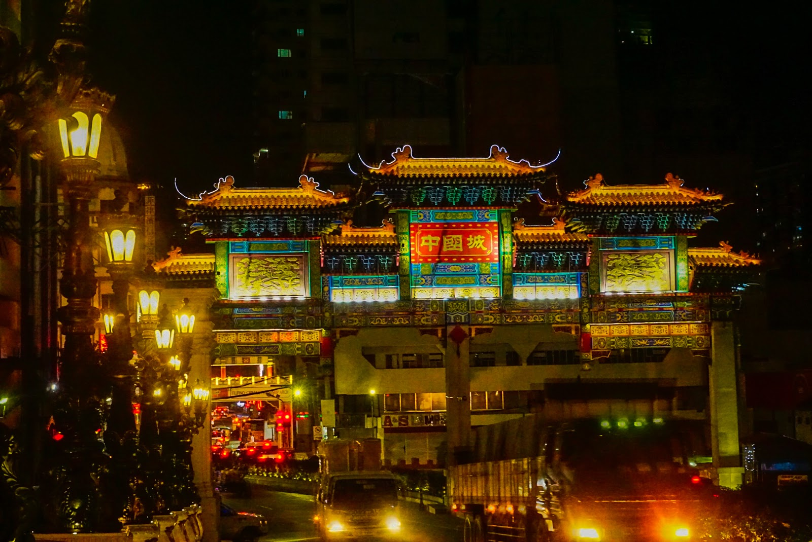
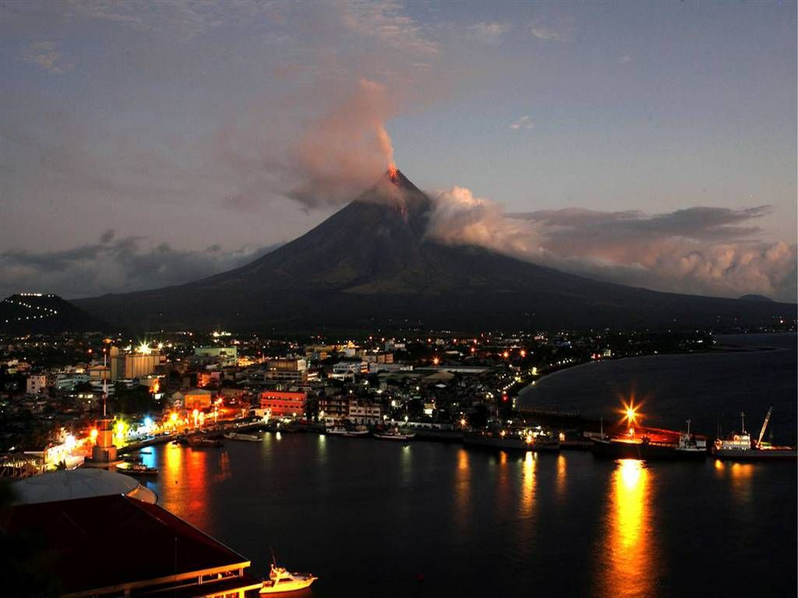
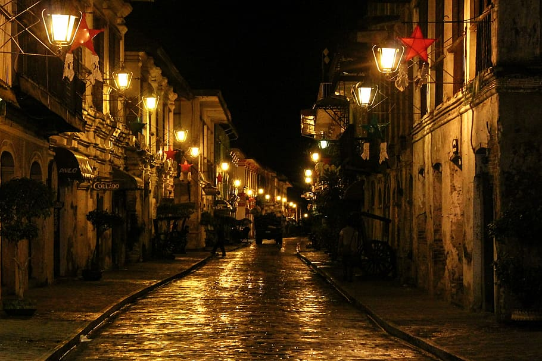

Palawan 🐚

Last Ecological Frontier
Palawan is a slice of heaven, a sliver of an island that teems with exotic wildlife, quaint fishing villages, and UNESCO World Heritage Sites. Wave hello to endangered animals at the Calauit Game Preserve and Wildlife Sanctuary or explore the Japanese shipwrecks of Coron Island, regarded as one of the best dive sites in the world. A guided boat tour of the Puerto Princesa Underground River will take your breath away.
Davao🦅
Crown Jewel of Mindanao
Davao City is a gateway to Mindanos, one of the Philippines’ largest islands, and home to Mt. Apo, one of the highest mountains in the archipelago. In Davao City, lovers of durian can eat their fill beneath a sculpture dedicated to the pungent fruit.
Dumaguete 🌊
City Of The Gentlest People
Dumaguete is the capital city and main port of Negros Oriental, the province that occupies the south-eastern part of Negros Island, in the Philippines. It is sometimes called the "City of Gentle People".A laid-back university town with a charming sea-front boulevard and a good selection of tourist-oriented services, Dumaguete is a good place to relax for anything from a few days to a few decades.
Binondo ⛩️
World's Oldest Chinatown
Binondo is the Chinatown area of Manila. The name comes from the Tagalog word binondoc, which means ‘mountainous’ due to its hilly landscape. Founded by Spanish Governor Luis Perez Dasmarinas in 1594, it was originally meant for Chinese immigrants who converted to Catholicism, making it the world’s oldest Chinatown district.
Bicol 🏞️
Vatican Of Disasters
That peninsula is the Bicol Region. “Bicolandia” is made up the provinces of Camarines Norte, Camarines Sur, Albay, Sorsogon, Catanduanes and Masbate. You can find it at the southern tip of the island of Luzon. Bicol is one of the Philippines’ best-known tourist destinations which is best know for spicy cuisine.
Ilocos Sur 🛖
The Heritage City of the Philippines
Established in the 16th century, Vigan is the best-preserved example of a planned Spanish colonial town in Asia. Its architecture reflects the coming together of cultural elements from elsewhere in the Philippines, from China and from Europe, resulting in a culture and townscape that have no parallel anywhere in East and South-East Asia.